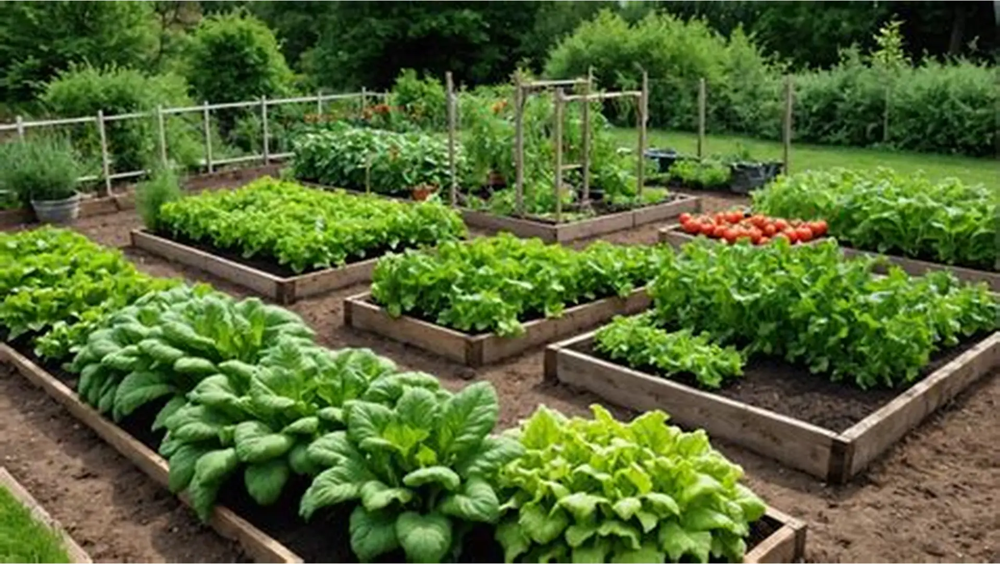
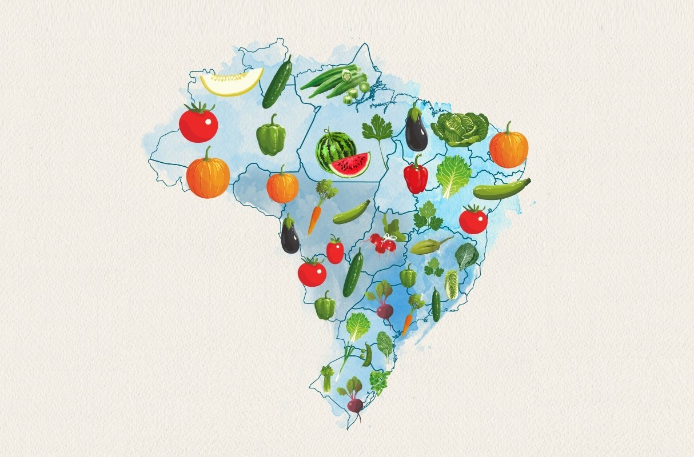

As hortas comunitárias e privadas são iniciativas que permitem o acesso a alimentos saudáveis e sustentáveis, sendo que as hortas comunitárias ofertam o alimento de forma gratuita, pelo envolvimento da sociedade ao entorno no cultivo, e as hortas privadas ofertam alimentos a preços sociais.
Em ambas as iniciativas, a principal dificuldade enfrentada é o acesso e apoio das comunidades, principalmente pela ausência de divulgação ou pela falta de recursos. E o HortaMap veio com o objetivo de promover uma conexão entre as hortas, os responsáveis e a comunidade ao entorno.

O primeiro passo para usar a solução começa no cadastro da horta. Com poucas informações, a horta já passa a fazer parte do nosso banco de dados e a comunidade consegue se conectar com a iniciativa.
A partir deste cadastro, tenha acesso a um ecossistema de gerenciamento de dados, reunindo insights sobre recursos disponíveis, voluntários associados a sua horta, gestão de estoque e recursos de IA para apoiar uma produção otimizada.
Ficou com alguma dúvida sobre como o HortaMap funciona ou como pode apoiar a sua iniciativa?

As hortas comunitárias são espaços cultivados por várias pessoas da comunidade, como moradores de um bairro ou voluntários. Todos podem participar do plantio, da colheita e do cuidado com a horta. O principal objetivo é ajudar as pessoas, promover a colaboração e facilitar o acesso a alimentos saudáveis, muitas vezes de forma gratuita ou com um custo bem baixo.
Já as hortas privadas pertencem a uma pessoa, família ou organização. O acesso é mais restrito, e quem cuida decide como a horta será usada. Ela pode servir tanto para consumo próprio quanto para venda dos alimentos, sendo comum cobrar pelos produtos, mesmo que a preços acessíveis.
Hortas não são só plantas: são saúde, economia, conexão e futuro. O Brasil tem espaço, clima e gente criativa de sobra. O que falta, muitas vezes, é só o primeiro passo: alguém que decide começar.
Você não precisa de muito: um pequeno terreno, alguns vasos ou até um cantinho na varanda já são suficientes para transformar realidade em possibilidade. Cada horta nasce de uma escolha simples: plantar hoje pensando no amanhã.
